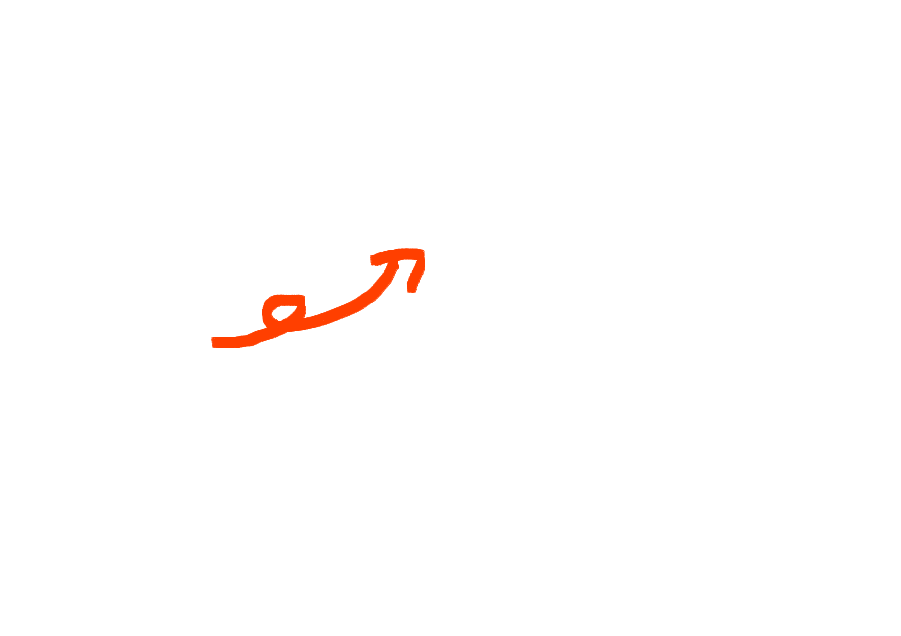
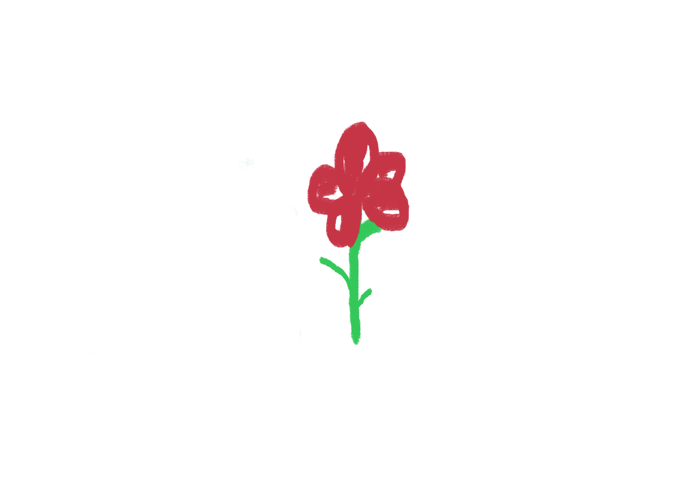
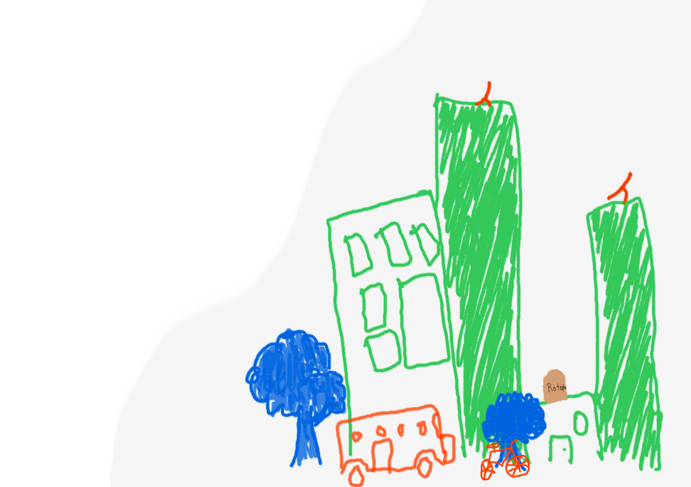

Doble captura
Capturas sin señal en campo y repites todo en un Excel de vuelta a la oficina.
Del diseño de una política pública a la ejecución en campo — un solo sistema, sin PDFs perdidos y con evidencia auditable en tiempo real.
Demo sin registro · sin instalación · 5 minutos
MIR → Kanban → Campo → Bitácora
El problema
Entre el documento que diseña un programa y la persona que lo ejecuta en la calle hay capturas duplicadas, PDFs olvidados y evidencia que se pierde. Así se ve hoy:
Capturas sin señal en campo y repites todo en un Excel de vuelta a la oficina.

La estrategia nace en una presentación y muere en un PDF que nadie vuelve a abrir.

La evidencia física se pierde; cada auditoría empieza desde cero con más oficios.
La solución
Garabato toma el diseño de tu política y lo desenreda en cuatro pasos: cada uno deja un rastro verificable que conecta con el siguiente.
Cargas tu Matriz de Indicadores para Resultados y el copiloto detecta huecos lógicos antes de que lleguen a la calle.
Cada objetivo se vuelve una tarjeta con responsable, plazo y evidencia requerida. La estrategia ahora es un tablero operativo.
El equipo de campo captura una sola vez, sin señal. La evidencia se georreferencia y sincroniza cuando vuelve la conexión.
Cada acción queda firmada y fechada. El órgano fiscalizador consulta la cadena completa sin pedir un solo oficio.
La plataforma
Una sola fuente de verdad: lo que se diseñó en gabinete es exactamente lo que se ejecuta en campo y lo que se reporta al cierre. Sin versiones paralelas, sin "el Excel bueno".

Sugiere, valida y alerta. Nunca decide por ti: cada recomendación queda registrada, firmada y trazable.
la IA propone, tú dispones

1
captura única
del campo al informe
09:41:07 evidencia#4821 sellada ✓ hash a3f9…c21e
09:41:09 geolocalización adjunta ✓ 19.4326, -99.1332
09:42:51 tarea #207 → completada por brigada_03
10:02:14 consulta de auditoría · solo lectura
— nada se edita, nada se borra —

hecho en el territorio,
para el territorio